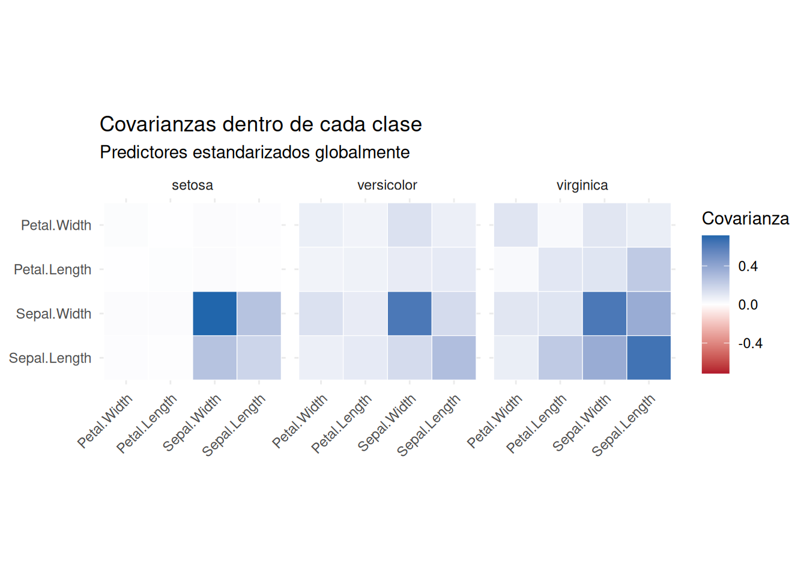
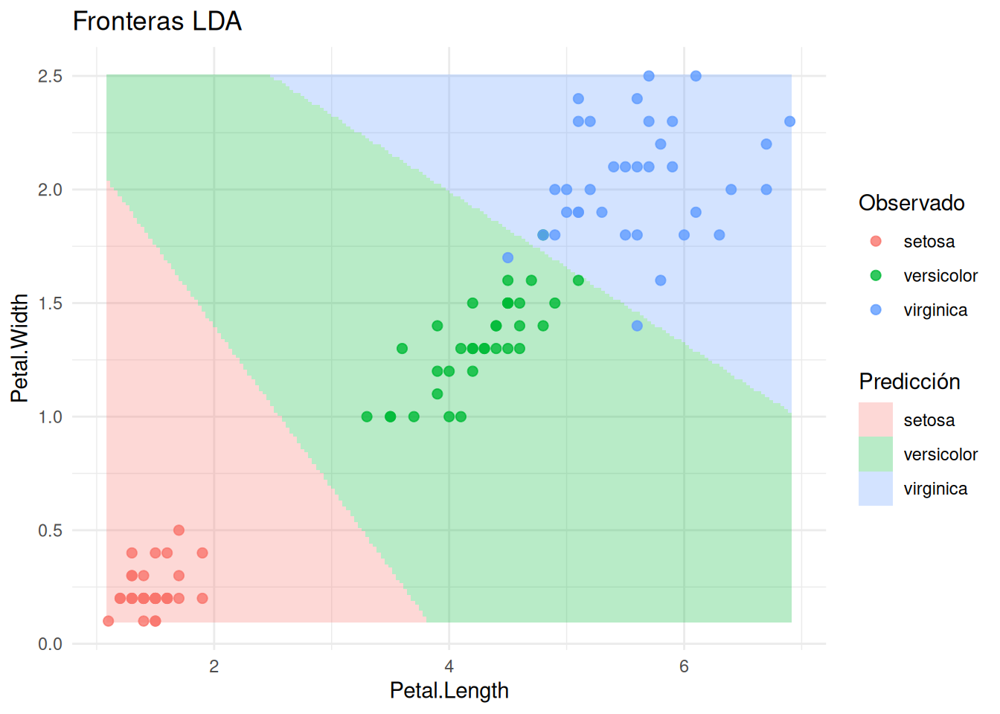
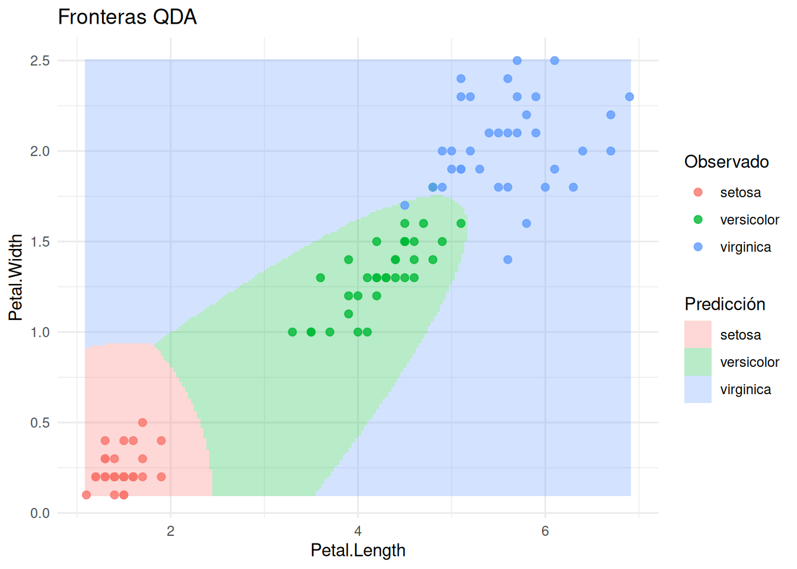
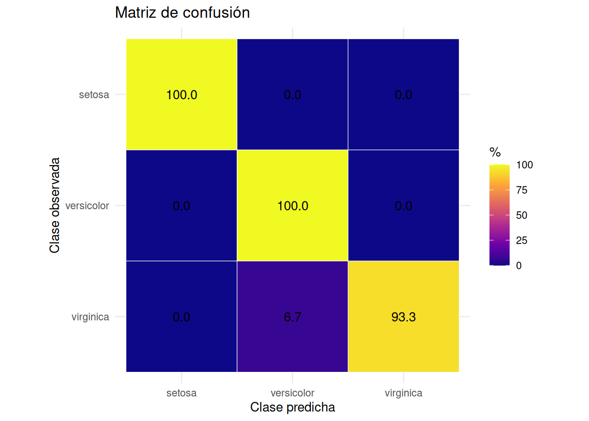
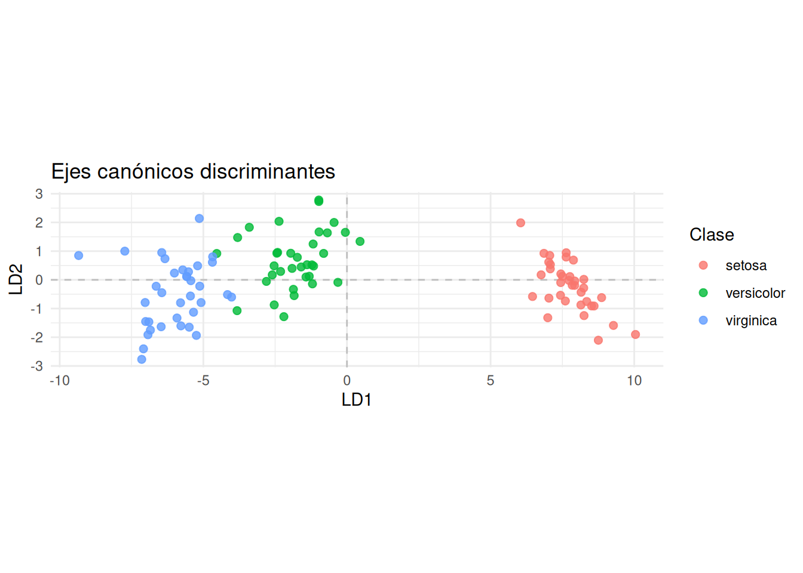

Código
library(tidyverse)
library(knitr)
library(MASS)
source("FuncionesDiscriminante.R")library(tidyverse)
library(knitr)
library(MASS)
source("FuncionesDiscriminante.R")Los datos deben contener individuos en filas, predictores numéricos en columnas y la clase conocida en una columna factor. Entrenamiento y test deben separarse antes de ajustar o transformar los datos. Los modelos centrales se ajustan explícitamente con MASS::lda() y MASS::qda().
En clustering desconocíamos los grupos y buscábamos una partición. En análisis discriminante la clase es conocida en los datos de entrenamiento. El objetivo es aprender una regla que clasifique nuevos individuos y cuantificar su error fuera de muestra.
En iris, por ejemplo, conocemos la especie de cada flor y observamos cuatro medidas. Queremos responder:
Separar visualmente los grupos en los datos de entrenamiento no demuestra capacidad predictiva. La evaluación debe utilizar observaciones que no participaron en el ajuste.
Sea \(Y\in\{1,\ldots,G\}\) la clase y \(X\in\mathbb{R}^p\) el vector de predictores. Para cada clase necesitamos:
El teorema de Bayes proporciona la probabilidad posterior:
\[ P(Y=g\mid X=x) =\frac{\pi_g f_g(x)} {\sum_{h=1}^{G}\pi_h f_h(x)}. \]
Si todos los errores tienen el mismo coste, la regla óptima asigna:
\[ \widehat y(x)=\arg\max_g P(Y=g\mid X=x). \]
Esta regla minimiza la probabilidad teórica de error cuando priors y densidades son correctos. LDA y QDA se diferencian por cómo modelan \(f_g(x)\).
Los priors representan la prevalencia de las clases antes de observar \(x\). La densidad condicional indica cuánto se parece el nuevo individuo a cada grupo. La posterior combina ambos elementos.
Una clase rara puede necesitar evidencia predictiva fuerte para superar a una clase frecuente. Por eso modificar priors no es un detalle técnico: cambia las fronteras de decisión.
LDA y QDA suponen que, dentro de cada clase,
\[ X\mid Y=g\sim\mathcal N_p(\mu_g,\Sigma_g). \]
La densidad es:
\[ f_g(x)= \frac{1}{(2\pi)^{p/2}|\Sigma_g|^{1/2}} \exp\left\{-\frac12 (x-\mu_g)^\top\Sigma_g^{-1}(x-\mu_g) \right\}. \]
El término cuadrático es la distancia de Mahalanobis a la media de la clase. Una diferencia en una dirección de poca variabilidad pesa más que la misma diferencia en una dirección muy variable, y las correlaciones modifican la forma de las regiones de igual densidad.
Tomando logaritmos y eliminando la constante común \(-p\log(2\pi)/2\), obtenemos:
\[ \delta_g(x)= -\frac12\log|\Sigma_g| -\frac12(x-\mu_g)^\top\Sigma_g^{-1}(x-\mu_g) +\log\pi_g. \]
Clasificar por la mayor posterior equivale a elegir la clase con mayor \(\delta_g(x)\).
Usaremos una división estratificada para conservar aproximadamente la proporción de cada especie.
particion <- particionar_clasificacion(
iris,
respuesta = "Species",
proporcion = 0.70,
semilla = 123
)
entrenamiento <- particion$entrenamiento
test <- particion$test
kable(table(entrenamiento$Species), col.names = c("Especie", "Entrenamiento"))| Especie | Entrenamiento |
|---|---|
| setosa | 35 |
| versicolor | 35 |
| virginica | 35 |
kable(table(test$Species), col.names = c("Especie", "Test"))| Especie | Test |
|---|---|
| setosa | 15 |
| versicolor | 15 |
| virginica | 15 |
El conjunto de entrenamiento sirve para estimar parámetros y comparar alternativas mediante validación cruzada. El test debe reservarse para una evaluación final.
Son fugas de información:
LDA supone:
\[ \Sigma_1=\cdots=\Sigma_G=\Sigma. \]
Al expandir la forma cuadrática,
\[ (x-\mu_g)^\top\Sigma^{-1}(x-\mu_g) =x^\top\Sigma^{-1}x -2x^\top\Sigma^{-1}\mu_g +\mu_g^\top\Sigma^{-1}\mu_g, \]
el término \(x^\top\Sigma^{-1}x\) es común a todas las clases y se cancela. También se cancela \(\log|\Sigma|\). La función discriminante queda:
\[ \delta_g^{LDA}(x)= x^\top\Sigma^{-1}\mu_g -\frac12\mu_g^\top\Sigma^{-1}\mu_g +\log\pi_g. \]
Es una función lineal de \(x\). La frontera entre las clases \(g\) y \(h\) satisface:
\[ \delta_g^{LDA}(x)=\delta_h^{LDA}(x), \]
y por tanto es un hiperplano.
Las medias se estiman dentro de cada clase. La covarianza común se estima agrupando la variabilidad interna:
\[ \widehat\Sigma= \frac{1}{n-G} \sum_{g=1}^{G} \sum_{i:Y_i=g} (x_i-\bar x_g)(x_i-\bar x_g)^\top. \]
El denominador \(n-G\) refleja que se han estimado \(G\) medias. Los priors predeterminados de MASS::lda() son las proporciones observadas en entrenamiento.
formula_modelo <- Species ~ Sepal.Length + Sepal.Width + Petal.Length + Petal.Width
ajuste_lda <- MASS::lda(
formula_modelo,
data = entrenamiento
)
resumen_lda <- resumir_lda(ajuste_lda)
kable(resumen_lda$priors, digits = 3)| clase | prior |
|---|---|
| setosa | 0.333 |
| versicolor | 0.333 |
| virginica | 0.333 |
kable(resumen_lda$medias, digits = 3)| clase | Sepal.Length | Sepal.Width | Petal.Length | Petal.Width |
|---|---|---|---|---|
| setosa | 4.991 | 3.366 | 1.471 | 0.231 |
| versicolor | 5.943 | 2.777 | 4.263 | 1.329 |
| virginica | 6.631 | 2.983 | 5.591 | 2.034 |
No debemos decidir únicamente con una prueba formal. Conviene comparar dispersión, correlaciones, tamaño de las clases y estabilidad esperada.

Las matrices se muestran después de una estandarización global para que las escalas sean comparables. Diferencias moderadas no invalidan automáticamente LDA: su covarianza común reduce varianza de estimación y puede predecir mejor que un modelo más flexible.
QDA permite una matriz diferente en cada clase. Mantiene la función general:
\[ \delta_g^{QDA}(x)= -\frac12\log|\Sigma_g| -\frac12(x-\mu_g)^\top\Sigma_g^{-1}(x-\mu_g) +\log\pi_g. \]
Ahora el término \(x^\top\Sigma_g^{-1}x\) depende de la clase y no se cancela. La igualdad entre dos funciones discriminantes genera una frontera cuadrática.
ajuste_qda <- MASS::qda(
formula_modelo,
data = entrenamiento
)QDA estima \(G\) matrices con \(p(p+1)/2\) parámetros cada una. LDA estima una sola. QDA puede adaptarse a formas distintas, pero necesita muchas más observaciones por clase y es más sensible a covarianzas casi singulares.
Para ver las fronteras utilizamos solo longitud y anchura del pétalo. Estos modelos bidimensionales son ilustrativos y no sustituyen a los modelos de cuatro predictores.
lda_2d <- MASS::lda(
Species ~ Petal.Length + Petal.Width,
data = entrenamiento
)
qda_2d <- MASS::qda(
Species ~ Petal.Length + Petal.Width,
data = entrenamiento
)

La mayor flexibilidad de QDA no garantiza menor error fuera de muestra. Existe un compromiso entre sesgo y varianza: LDA impone más estructura y estima menos parámetros; QDA se adapta más, pero sus fronteras son menos estables.
Podemos comparar métodos dentro del entrenamiento mediante validación cruzada estratificada. Cada observación se predice con un modelo que no la utilizó para estimar parámetros.
cv_lda <- validacion_cruzada_discriminante(
entrenamiento,
"Species",
metodo = "lda",
k = 5,
semilla = 123
)
cv_qda <- validacion_cruzada_discriminante(
entrenamiento,
"Species",
metodo = "qda",
k = 5,
semilla = 123
)
bind_rows(
cv_lda$evaluacion$global |> mutate(modelo = "LDA", .before = 1),
cv_qda$evaluacion$global |> mutate(modelo = "QDA", .before = 1)
) |>
kable(digits = 3)| modelo | accuracy | balanced_accuracy | macro_f1 |
|---|---|---|---|
| LDA | 0.971 | 0.971 | 0.971 |
| QDA | 0.990 | 0.990 | 0.990 |
Una única partición de validación cruzada también tiene variabilidad. En un análisis real podríamos repetirla o usar validación cruzada anidada si además seleccionamos variables o hiperparámetros.
comparacion <- comparar_modelos_discriminantes(
modelos = list(LDA = ajuste_lda, QDA = ajuste_qda),
datos_test = test,
respuesta = "Species"
)
kable(comparacion$metricas, digits = 3)| modelo | accuracy | balanced_accuracy | macro_f1 |
|---|---|---|---|
| LDA | 0.978 | 0.978 | 0.978 |
| QDA | 0.978 | 0.978 | 0.978 |
El test se utiliza ahora una sola vez. Si ambos métodos tienen resultados similares, suele ser razonable preferir el más estable y sencillo salvo que el coste de errores concretos indique otra cosa.
En nuestras matrices, las filas son clases observadas y las columnas clases predichas. La diagonal principal contiene los aciertos.
evaluacion_lda <- comparacion$resultados$LDA$evaluacion
kable(evaluacion_lda$matriz)| setosa | versicolor | virginica | |
|---|---|---|---|
| setosa | 15 | 0 | 0 |
| versicolor | 0 | 15 | 0 |
| virginica | 0 | 1 | 14 |
kable(evaluacion_lda$global, digits = 3)| accuracy | balanced_accuracy | macro_f1 |
|---|---|---|
| 0.978 | 0.978 | 0.978 |
kable(evaluacion_lda$por_clase, digits = 3)| clase | soporte | sensibilidad | especificidad | precision | f1 |
|---|---|---|---|---|---|
| setosa | 15 | 1.000 | 1.000 | 1.000 | 1.000 |
| versicolor | 15 | 1.000 | 0.967 | 0.938 | 0.968 |
| virginica | 15 | 0.933 | 1.000 | 1.000 | 0.966 |

Para una clase \(g\), tratándola frente al resto:
\[ Sensibilidad_g=\frac{TP_g}{TP_g+FN_g}, \]
\[ Especificidad_g=\frac{TN_g}{TN_g+FP_g}, \]
\[ \operatorname{Precision}_g=\frac{TP_g}{TP_g+FP_g}, \]
\[ F1_g=2\frac{\operatorname{Precision}_g\,Sensibilidad_g} {\operatorname{Precision}_g+Sensibilidad_g}. \]
La accuracy puede ocultar malos resultados en clases pequeñas. En multiclase, balanced_accuracy en nuestras funciones es la media de sensibilidades y macro_f1 concede el mismo peso a cada clase.
La métrica relevante depende de la decisión. Si no detectar una clase es especialmente grave, su sensibilidad importa más que la accuracy global.
La clase predicha oculta cuánta duda tenía el modelo. predict() devuelve probabilidades posteriores para todas las clases.
prediccion_lda <- comparacion$resultados$LDA$prediccion
resumir_predicciones_discriminantes(
prediccion_lda,
observado = test$Species,
id = rownames(test)
) |>
head(10) |>
kable(digits = 3)| id | predicho | probabilidad_maxima | margen | observado | acierto |
|---|---|---|---|---|---|
| 120 | virginica | 0.700 | 0.399 | virginica | TRUE |
| 78 | versicolor | 0.717 | 0.434 | versicolor | TRUE |
| 134 | versicolor | 0.761 | 0.521 | virginica | FALSE |
| 127 | virginica | 0.787 | 0.575 | virginica | TRUE |
| 124 | virginica | 0.890 | 0.780 | virginica | TRUE |
| 85 | versicolor | 0.973 | 0.947 | versicolor | TRUE |
| 150 | virginica | 0.987 | 0.974 | virginica | TRUE |
| 111 | virginica | 0.991 | 0.982 | virginica | TRUE |
| 117 | virginica | 0.996 | 0.992 | virginica | TRUE |
| 64 | versicolor | 0.997 | 0.993 | versicolor | TRUE |
La probabilidad máxima mide confianza absoluta. El margen entre las dos mayores posteriores mide ambigüedad entre las mejores alternativas. Los casos con margen pequeño merecen revisión, aunque las probabilidades solo deben interpretarse literalmente si están razonablemente calibradas.
Podemos proporcionar priors poblacionales:
ajuste_lda_priors_iguales <- MASS::lda(
formula_modelo,
data = entrenamiento,
prior = rep(1 / 3, 3)
)Esto es apropiado si la muestra de entrenamiento fue equilibrada artificialmente o si conocemos prevalencias poblacionales distintas. Los priors no deben elegirse para mejorar retrospectivamente el test.
Si \(C(g,d)\) es el coste de decidir \(d\) cuando la clase real es \(g\), la decisión óptima minimiza el coste posterior esperado:
\[ R(d\mid x)=\sum_g C(g,d)P(Y=g\mid X=x). \]
clases <- levels(iris$Species)
costes <- matrix(
1,
nrow = 3,
ncol = 3,
dimnames = list(real = clases, decision = clases)
)
diag(costes) <- 0
costes["virginica", "versicolor"] <- 3
prediccion_costes <- clasificar_con_costes(
prediccion_lda$posterior,
costes
)
kable(table(prediccion_estandar = prediccion_lda$class, prediccion_costes))| setosa | versicolor | virginica | |
|---|---|---|---|
| setosa | 15 | 0 | 0 |
| versicolor | 0 | 15 | 1 |
| virginica | 0 | 0 | 14 |
Al penalizar más confundir virginica con versicolor, la regla puede exigir mayor evidencia antes de decidir versicolor. Cambiar costes modifica la decisión, no el modelo de densidades.
LDA también ofrece una representación supervisada. Sea:
\[ W=\sum_{g=1}^{G}\sum_{i:Y_i=g} (x_i-\bar x_g)(x_i-\bar x_g)^\top \]
la dispersión dentro de clases, y
\[ B=\sum_{g=1}^{G}n_g (\bar x_g-\bar x)(\bar x_g-\bar x)^\top \]
la dispersión entre clases. La primera dirección discriminante maximiza:
\[ J(a)=\frac{a^\top Ba}{a^\top Wa}. \]
El problema conduce a los autovectores generalizados:
\[ Ba=\lambda Wa. \]
Las direcciones posteriores maximizan separación adicional bajo ortogonalidad en la métrica de \(W\). Solo pueden existir:
\[ \min(p,G-1) \]
ejes discriminantes, porque las \(G\) medias de clase generan como máximo \(G-1\) direcciones independientes.
kable(resumen_lda$ejes, digits = 3)| eje | autovalor | proporcion_separacion | acumulado |
|---|---|---|---|
| LD1 | 1734.669 | 0.992 | 0.992 |
| LD2 | 14.049 | 0.008 | 1.000 |
kable(resumen_lda$coeficientes, digits = 3)| variable | LD1 | LD2 |
|---|---|---|
| Sepal.Length | 0.860 | -0.025 |
| Sepal.Width | 1.388 | -2.375 |
| Petal.Length | -2.273 | 0.898 |
| Petal.Width | -2.914 | -2.687 |

La primera dirección recoge casi toda la separación entre especies. Los coeficientes describen combinaciones lineales, pero dependen de las escalas y de las correlaciones entre predictores; no son una medida aislada de importancia causal.
PCA maximiza varianza total sin conocer las clases:
\[ \max_a a^\top Sa. \]
LDA maximiza variación entre clases en relación con la variación interna:
\[ \max_a\frac{a^\top Ba}{a^\top Wa}. \]
Una dirección con mucha variabilidad puede ser inútil para clasificar si esa variabilidad ocurre dentro de todas las clases. A la inversa, una dirección de varianza total pequeña puede separar muy bien sus medias.
LDA y QDA son modelos generativos. Sus principales riesgos son:
LDA suele tolerar mejor muestras moderadas porque agrupa covarianzas. QDA necesita estimar e invertir una matriz por clase. Si \(p\) es grande respecto a \(n_g\), pueden ser necesarios selección de variables, reducción de dimensión realizada dentro de cada pliegue o análisis discriminante regularizado.
La normalidad exacta no es imprescindible para que LDA clasifique razonablemente, pero sí afecta a la interpretación probabilística de las posteriores.
LDA y QDA modelan las distribuciones de los predictores dentro de clases y aplican Bayes para clasificar. LDA comparte una covarianza y produce fronteras lineales; QDA estima una por clase y produce fronteras cuadráticas. La elección depende del compromiso entre estructura y flexibilidad. Una evaluación válida requiere separación de datos, métricas por clase, probabilidades, priors y costes coherentes con la decisión.
| Función | Para qué se usa | Uso básico |
|---|---|---|
particionar_clasificacion() |
Crear una división estratificada de entrenamiento y test. | particionar_clasificacion(datos, "clase") |
MASS::lda() |
Ajustar análisis discriminante lineal. | MASS::lda(clase ~ ., entrenamiento) |
MASS::qda() |
Ajustar análisis discriminante cuadrático. | MASS::qda(clase ~ ., entrenamiento) |
validacion_cruzada_discriminante() |
Obtener predicciones fuera de pliegue dentro del entrenamiento. | validacion_cruzada_discriminante(datos, "clase", "lda") |
comparar_modelos_discriminantes() |
Comparar varios modelos sobre el mismo test. | comparar_modelos_discriminantes(modelos, test, "clase") |
evaluar_clasificacion() |
Calcular matriz y métricas globales y por clase. | evaluar_clasificacion(real, predicho) |
visualizar_matriz_confusion() |
Mostrar conteos o porcentajes con diagonal convencional. | visualizar_matriz_confusion(evaluacion, "porcentaje_fila") |
resumir_predicciones_discriminantes() |
Identificar predicciones inciertas mediante posteriores y márgenes. | resumir_predicciones_discriminantes(prediccion, real) |
resumir_lda() |
Extraer priors, medias, coeficientes y separación canónica. | resumir_lda(ajuste) |
visualizar_ejes_discriminantes() |
Representar los ejes canónicos de LDA. | visualizar_ejes_discriminantes(ajuste, datos, "clase") |
visualizar_fronteras_discriminantes() |
Dibujar regiones de decisión cuando hay dos predictores. | visualizar_fronteras_discriminantes(ajuste, datos, "clase", variables) |
visualizar_covarianzas_grupos() |
Comparar covarianzas internas de las clases. | visualizar_covarianzas_grupos(datos, "clase", variables) |
clasificar_con_costes() |
Elegir clases minimizando coste posterior esperado. | clasificar_con_costes(posteriores, costes) |